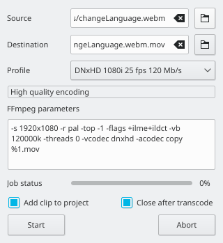

File Menu¶
New¶
Creates a new Kdenlive project. The default keyboard shortcut is Ctrl + N.
See Quick Start.
The default settings that appear on this feature are defined under Settings ‣ Configure Kdenlive > Configure Kdenlive.
Open¶
Opens a project that has been saved in a Project File Details format file. The default keyboard shortcut is Ctrl + O.
Open Recent¶
Displays a picklist of recently saved files (up to 10) to choose from. Click the Clear List choice when you want to start over with a fresh list.
Save¶
Saves the current state of the project in a Project File Details format file. Prompts for a file name if this is the first time the file is being saved. The default keyboard shortcut is Ctrl + S.
Save As¶
Saves the current state of the project in a Project File Details format file of your choice. The default keyboard shortcut is Ctrl + Shift + S.
Save Copy¶
Revert¶
This abandons any changes to the project you have made since last saving and reverts back to the last saved version of the project.
Transcode Clips¶
{kind=link}
Use this to convert a video or audio clip from one codec/format to another.
Choose one source file or multiple source files and a profile that represents the desired destination codec/format. Optionally change the destination path and file name and hit Start. Otherwise, hit Abort to close the windows.
Transcoding a clip should be faster than loading the clip into the timeline and re-encoding it into a different format.
Add clip to project controls if after the conversion, the new clip is added to the The Project Bin.
Close after encode Uncheck this checkbox if there is the need to convert to another format after the conversion.
Close¶
Not sure what this is supposed to do. It is always greyed out on my Kdenlive.
Maybe it is there ready for a version of Kdenlive that can have more than one project open at a time.
Quit¶
Exits Kdenlive. Prompts you to save any unsaved changes. The default keyboard shortcut is Ctrl + Q.